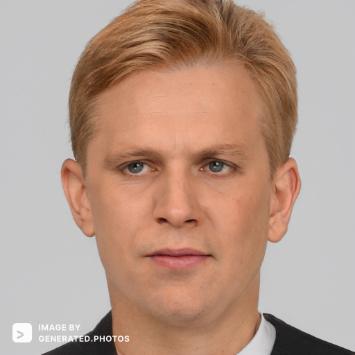
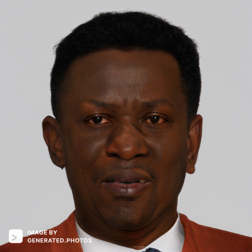

Four young cosmonauts are training to be on the next Envision trip to Mars, flying out of the Russian space station.
Every day the cosmonauts report to training at 8 AM, and end at 6 PM.
On a nightly sweep, the space station janitor notices a trail of footprints.
He begins to clean them, only to find the body of one of the cosmonauts in the main board room.
Victim - Mikhail

Mikhail has a multitude of talents which include singing, songwriting, and piloting space shuttles into space. Mikhail was selected by the Russian Space Federation to join a classified mission to be one of the first people to colonize Mars. Mikhail was selected to be the chief cosmonaut. Since his selection, dissidents were uncovered in the organization.
Suspect 1 - Vladimir
Vladimir was the second best pilot selected by the Russian Space Federation. He was appointed lieutenant cosmonaut, and was extremely unhappy with his selection. Vladimir comes from a highly distinguished family with a long lineage of pilots through the generations. His shortcomings weigh heavily on him, and he has not written home since the selection.
Suspect 2 - Irina
Irina is the only female cosmonaut to ever be selected by the Russian Space Federation. Upon her selection for the highly classified Mars mission, she fell head over heels for Mikhail (chief cosmonaut). She and Mikhail developed a long loving relationship, but Mikhail had other plans. Irina was enraged by Mikhail’s decision to end the relationship to focus on his mission to Mars.
Suspect 3 - Aleksandr

Aleksandr was selected as the aerospace engineer for this expedition. Aleksandr is Mikhail’s most trustworthy and notable friend. Mikhail can confide in Aleksandr and tell him anything. Mikhail and Aleksandr were having a conversation about Mikhail’s emotional state shortly before his death. Mikhail was expressing his emotions about the stress and toll a recent failure has taken on his mental state. Shortly before the incident, Mikhail told Aleksandr that he could not imagine what could come next in his life.